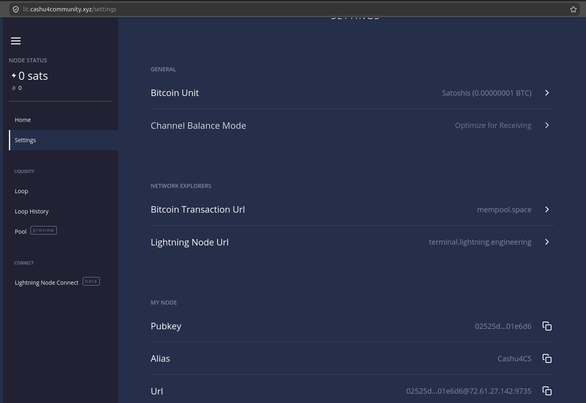
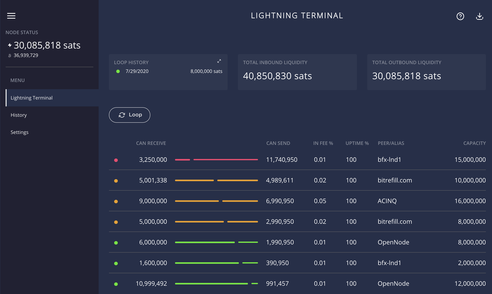

Gestiona tu nodo con Lightning Terminal (LIT)
Lightning Terminal es una interfaz gráfica y herramienta de gestión para la red Lightning Network de Bitcoin. Desarrollada por Lightning Labs, permite a los nodos operar canales de pago de forma más eficiente mediante funciones avanzadas como Pool (mercado de liquidez), Loop (intercambio on/off-chain) y Faraday (análisis de riesgos). Facilita la compra y venta de liquidez entrante, la gestión de canales y la obtención de recomendaciones para mejorar la rentabilidad del nodo.
Accedemos a la web https://lit.cashu4community.xyz

Aquí accederemos con la contraseña que fue generada en el proceso de configuración de la infraestructura mediante el script config_env.sh.
lit.conf, exactamente en la clave uipassword ubicado en /cashu4cs-deploy/app-data/lit/
Página de Inicio
Lo primero que veremos es la página de inicio, que nos muestra varias opciones para conectarnos directo al nodo y enlace al canal de YouTube.

Página de Ajustes
En los ajustes podemos realizar varias acciones:

- Cambiar la unidad de Bitcoin (Satoshis, Bits y Bitcoin)
- Seleccionar modo en que van a funcionar los canales (Optimizados para recibir, enviar o enrutar)
- Cambiar los exploradores (mempool.space para bitcoin onchain y terminal.lightning.engineering para lightning)
- Muestra la clave pública del nodo
- Alias
- Muestra el URI
Página de Loop
El servicio Loop te permite mover bitcoin entre la red Lightning y la blockchain de Bitcoin de manera no custodial (sin entregar el control de tus fondos a un tercero), similar a los llamados submarine swaps.

Loop Out: Convertir Liquidez de Salida en Entrante
Esta operación te permite enviar fondos desde tu nodo Lightning hacia una dirección on-chain (en la blockchain de Bitcoin).
- Problema que soluciona: Si tienes un canal con mucho saldo para enviar (saliente) pero necesitas capacidad para recibir pagos, un Loop Out te ayuda a balancearlo.
- Ejemplo práctico: Como comerciante que recibe muchos pagos, puedes usar Loop Out para mover tus ganancias de Lightning a una wallet fria en Bitcoin sin cerrar tus canales.
Loop In: Recargar tu Saldo para Enviar
Esta operación te permite tomar bitcoin desde tu wallet on-chain y convertirlo en liquidez off-chain dentro de tus canales Lightning.
- Problema que soluciona: Si te has quedado sin saldo para enviar pagos (porque has gastado mucho), puedes "refill" (rellenar) tus canales.
- Ventaja adicional: Con las versiones recientes, puedes financiar un Loop In con meses de antelación usando direcciones reutilizables, aprovechando momentos de tarifas de red bajas.